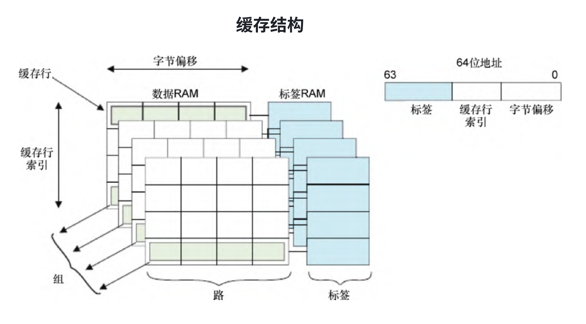
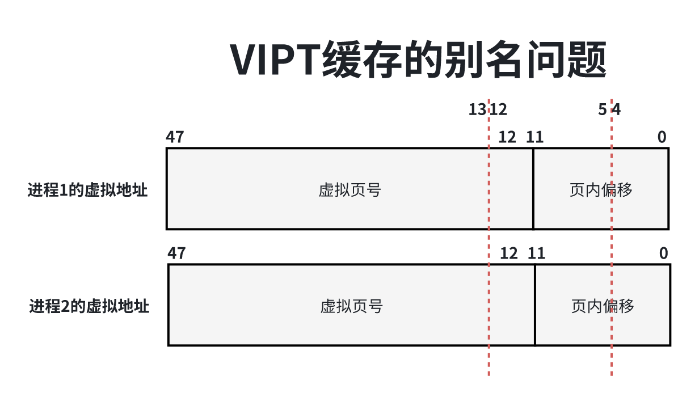
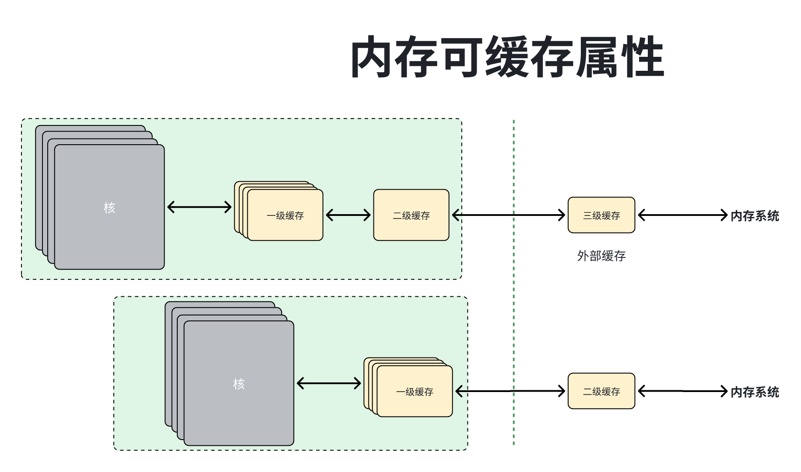
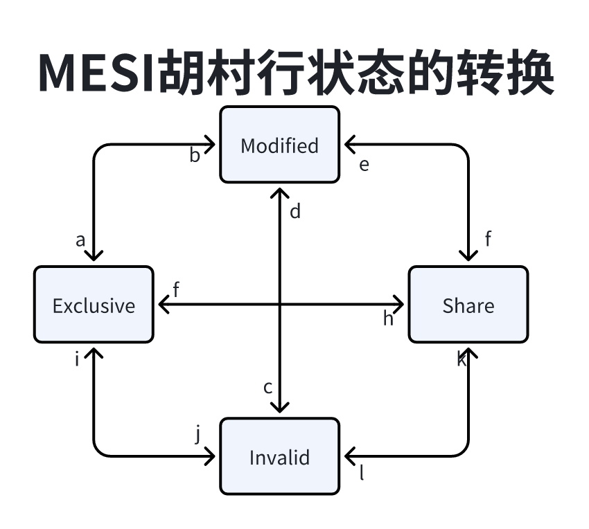
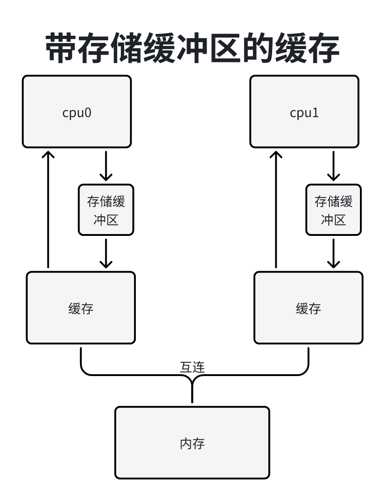
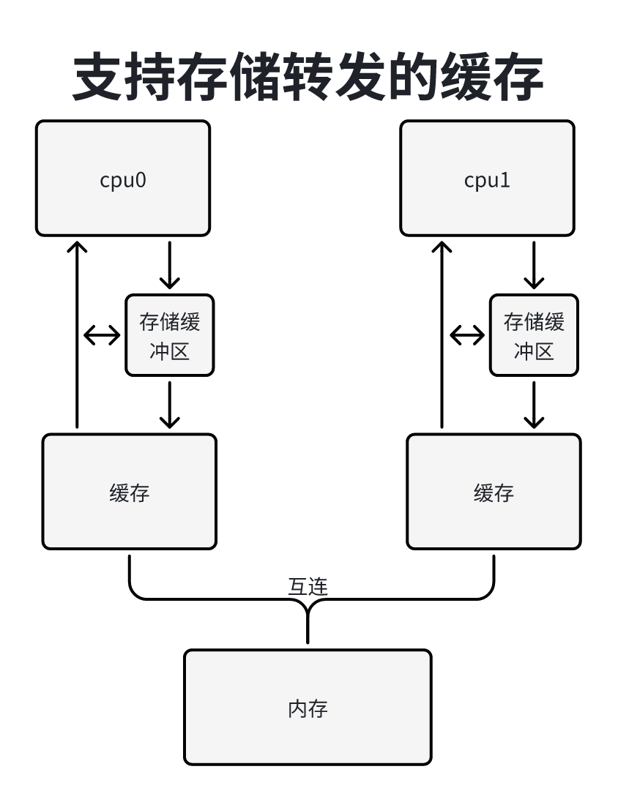
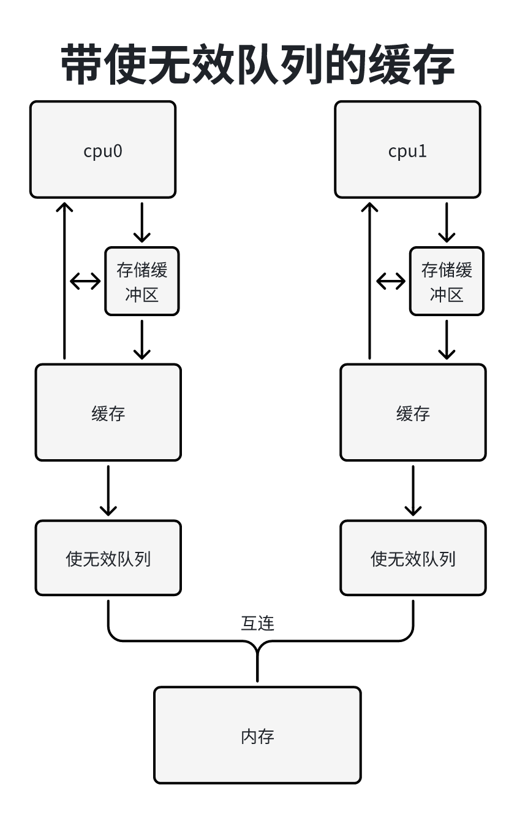

看到33KB的思路项链缓存（32KB 4-way set assoicative cache）必须要先了解缓存结构：

缓存由多个容量相同的字缓存并联组成，每个子缓存称为路（way），四路表示4个子缓存并联。
缓存是通过硬件散列表实现的，散列表是固定长度的散列桶，硬件工程师把散列桶称为组（Set），四路组想来你换存的散列通的长度是4。
缓存被划分为容量相同的缓存行，每个缓存行有两个状态位：有小为表示缓存行包含数据或指令，脏位表示缓存行里面的数据比内存里面的数据新。
每个缓存行对应一个索引。查找一个内存对峙对硬的缓存行，需要根据内存地址演出缓存行索引，因为肯呢个存在多个内存地址的缓存行索引相同，所以缓存行需要一个标签（tag）来区分不同的内存地址。
内存地址被分解为标签（tag）、缓存行索引（index）和缓存行内部的字节偏移（offset）。
我们再来分析“32KB思路组相连缓存”：缓存优4个子缓存并联组成，即思路并联，思路的容量总和是32KB，没录的容量是8KB。
缓存行的标签通常是从物理地址生成的，索引可能从物理地址或虚拟地址生成，我们根据索引的生成方式把缓存分为两类：
1）把从物理地址生成索引和标签的缓存称为物理索引物理标签（Physically Indexed Pyysically Tagged PIPT）缓存。
2）把从虚拟地址生成索引、从物理地址生成标签的缓存称为虚拟索引物理标签（Virtually Indexed Physically Tagged VIPT）缓存。
从虚拟地址生成索引的好吃是：不需要等到内存管理单元把虚拟地址转换成物理地址以后才能开始查找缓存，查询换出和地址转换可以并行执行，提高处理器的执行速度，但是可能导致缓存别名（cache alias）问题。
如下图所示，假设两个进程共享一个物理页，一个物理地址被映射到两个虚拟地址。假设页长度是4KB，缓存中每路的容量是8KB，缓存行的长度是32字节。

因为进程1的虚拟地址的第0~11位和物理地址的第0~11位相同，进程2的虚拟地址的第0~11位和物理地址的第0~11位相同，所以两个虚拟地址的第0~11位相同，但是两个虚拟地址的第12位不一定相同。
缓存行的字节偏移是虚拟地址是第0~4位，索引是虚拟地址的第5~12位。如果两个虚拟地址的第12位不同，那么生成的缓存索引不同，导致同一内存位置的数据被复制到缓存中的两个缓存行，这就是缓存别名的问题。
当缓存中每路的容量大于页长度的时候，会出现缓存别名的问题。如果缓存中华没录的容量小于等于页长度，那么不会出现缓存别名的问题，假设缓存中没录的容量是4KB，索引是虚拟地址的第5~11位，因为两个虚拟地址的第0~11位相同，所以两个虚拟地址生成的缓存行索引相同。
对于可写的数据，缓存别名问题的危害是：如果修改了一个缓存行中的数据，但另一个缓存行中的数据仍然是旧的，将导致两个虚拟地址读到的数据不同。对于指令和只读的数据，缓存别名问题没有危害。
软件可以规避缓存别名问题：把共享内存映射到进程的虚拟地址空间的时候，如果分配的虚拟内存区域的其实地址是缓存中每路的容量的整数倍，就可以规避缓存别名问题。
ARM64处理器的数据缓存和同一缓存通常是PIPT缓存，也可以是没有别名问题的VIPT缓存（缓存中没录的容量小于或等于页长度）。
ARM64处理器指令缓存由3种类型：
1）PIPT缓存。
2）VPIPT（VMID-awarePIPT）缓存，即感知虚拟机标识符的PIPT缓存。
3）VIPT缓存。
VPIPT缓存和VIPT缓存都实现了ARM IVIPT（Instruction VIPT）扩展：只需要在内存方指令的物理地址写入新的数据以后维护指令缓存。
缓存分配由两种策略。
1）写分配（write allocation）：如果处理器写数据的时候没有命中缓存行，那么分配一个缓存行，然后读取数据并填充缓存行，接着把数据写到缓存行。
2）读分配（read allocation）：如果处理器读数据的时候没有命中缓存行，那么分配一个缓存行。
缓存更新有两种策略：
1）写回（write-back）：处理器一些数据的时候，只有更新缓存，把缓存标记为脏。只在缓存行呗替换或程序清理的时候更新内存。
2）写透（write-through）：处理器写数据的时候，同时更新缓存和内存，但不会把缓存行标记为脏。
指定内存的可缓存属性，需要分别指定内部属性和外部属性，对内部和外部的划分是由具体实现定义的，如下图所示，典型划分是集成在处理器内部缓存的使用的内存属性，外部缓存使用外部属性。

处理器可能投机性的访问内存，即把程序美欧请求过的内存位置的数据自动加载到缓存中。程序可以只是处理那个数据将来被使用，让处理器预先把数据读到缓存中。ARM64处理器提供了预加载提示指令（PRFM 它是Perfetch from Memory的缩写）：
PRFM
例如：PRFM PLDL1KEEP,[Xm, #imm]表示为一个从虚拟地址（Xm + 偏移）加载数据的操作预取数据到1级缓存中，并且暂存在缓存中。
内核在以下情况需要维护缓存。
1）内核修改或删除页表项的时候，需要冲刷缓存。
2）内核使用内核虚拟地址修改进程的物流页，为了避免产生内核虚拟地址和用户虚拟地址之间的缓存别名问题，需要冲刷缓存。
3）和外围设备交换时，处理器写数据到DMA区域的内存块，然后通过设置外围设备的控制器上的控制寄存器发送命令，外围设备通过DMA控制器从物理内存读取数据。DMA控制器读取数据时不经过处理器的缓存，所以处理器写完数据以后必须冲刷缓存，把缓存中的数据写回到物理内存。
冲刷（flush）缓存的意思：如果缓存行的有效位置被设置，且脏位被设置，即缓存行包含数据并且被修改过，那么把数据写回到物理内存，然后清除有效位。如果缓存行的有效位被设置，但脏位没有被设置，即缓存行包含数据并且没有被修改过，只需要清除有效位。
进程退出时删除进程的所有页表项，或者进程正在执行execve()以装载程序的时候删除所有旧的页表项，必须按照下面的顺序执行：
1flsuh_cache_mm(mm);2change_all_page_tables_of(mm);3flush_tlb_mm(mm);内核修改某个虚拟地址范围内的页表项，必须按照下面的顺序执行：
31flsuh_cache_range(vma, start, end);2change_range_of_page_tables(mm,start, end);3flush_tlb_range(vma, start, end);内核修改一条页表项，必须按照下面顺序执行：
31flsuh_cache_page(vma, addr, pfn);2set_pte(pte_pointer, new_pte_val);3flush_tlb_page(vma, addr);在修改或删除页表项以前必须冲刷缓存，因为从虚拟地址生成索引的缓存要求：从缓存冲刷虚拟地址的时候，虚拟地址到物理地址的映射必须存在。
内核提供的在修改页表项冲刷缓存的函数如下表所示，所有处理器架构需要实现这些函数：如果处理器使用从虚拟地址生成索引的换出，必须实现这些函数；如果处理器使用从物理地址生成索引的缓存，只需要把这些函数定义成空函数。
| 函数 | 说明 |
|---|---|
| void flush_cache_mm(struct mm_struct *mm) | 从缓存冲刷整个用户地址空间 进程退出或执行execve()以装载程序的时候，需要处理整个用户地址空间 |
| void flush_cache_dup_mm(struct mm_struct *mm) | fork()分叉生成新的进程时候，从缓存冲刷整个用户地址空间和flush_cache_mm()分开，是为了允许对VIPY缓存做一些优化 |
| void flush_cache_range(struct vm_area_struct *vma, unsigned long start, unsi) | 从缓存冲刷某个用户虚拟地址范围 |
| void flush_cache_page(struct vm_area_struct *vma, unsigned long addr, unsigned long pfn) | 从缓存冲刷长度为一页的用户虚拟地址范围，主要是在页错误异常处理程序里面使用这个函数 |
| void flush_cache_kmaps(void) | 从缓存冲刷kmap()使用的虚拟地址范围，如果内核使用高端内存区域，需要实现这个函数 |
| void flush_cache_vmap(unsigned long start, unsigned long end) | 从缓存冲刷vmalloc地址空间的某个范围，函数vmalloc/vmap在设置页表项以后调用函数flush_cache_vmap |
| void flush_cache_vmmap(unsigned long start , unsigned long end) | 从缓存冲刷vmalloc地址空间的某个范围，函数cfree/vummap在删除页表项之间调用函数flsuh_cache_vunmap |
内核在修改进程的物理页时，使用内核虚拟地址（线性映射区域的虚拟地址，或者使用kmap/kmap_atomic临时把进程的物理页映射到内核地址空间）修改进程的物理页。为了避免可能存在的内核虚拟地址和用户虚拟地址之间的缓存行别名问题，内核修改完以后需要从缓存冲刷内核地址，让用户空间看见修改后的数据，比如：
void copy_user_page(void *to, void *form, unsigned long addr, struct page *page)父今晨分叉生成子进程，子进程和父进程共享物理页，当启用一个进程试图写西游的匿名页时，触发页错误异常，执行写时复制，分配新的物理页，使用函数copy_user_page把旧的物理页里面的数据复制到新的物理页，内核使用函数kmap_atomic临时把进程的物理页映射到内核虚拟地址空间。
void copy_user_page(struct vm_area *vma, struct page *page, unsigned long user_vaddr, void *dst, void *sc, int len)内服复制数据到用户页，内核使用kmap临时把用户页映射到内核虚拟地址空间。
内核提供的在修改进程的物理页以后冲刷缓存的函数下表所示，所有处理器架构需要实现这些函数：如果处理器使用从虚拟地址生成索引的缓存，必须实现这些函数；如果处理器使用从物理地址生成索引的缓存，只需要把这些函数定义成空函数。
| 函数 | 说明 |
|---|---|
| void flush_dcache_page(struct page *page) | 从数据缓存冲刷一页的内核虚拟地址范围当内核写或即将读一个文件页，并且这个文件页存在用户共享可写的映射，需要调用这个函数flush_dcache_page()不适合匿名页 |
| void flush_anon_page(struct vm_area_struct *vma, struct page *page, unsigned long vmaddr) | 从数据缓存冲刷内核虚拟地址范围[vmaddr, vmaddr+PAGE_SIZE)当内核访问匿名页的时候，调用该函数只有user_pages调用这个函数 |
| void flush_kernel_dcache_page(struct page *page) | 内核修改一个用户页，使用kmap把这个用户页临时映射到内核虚拟地址空间，修改完以后需要调用此函数冲刷数据缓存 |
| void flush_icache_range(unsigned long start, unsigned long end) | 内核把可执行文件的代码段复制到内存时，需要冲刷指令缓存，让处理器重新从内存读取指令 |
| void flush_icache_page(struct vm_area_struct *vma, struct page *page) | 内核把可执行文件的代码段复制到内存时，需要冲刷指令缓存，让处理器重新从内存读取指令 |
ARM64处理器支持3种缓存操作。
1）使缓存行失效（invalidate）：清除缓存行的有效位。
2）清理（clean）缓存行：首先把标记为脏的缓存行里面的数据写到下一级缓存或内存，然后清除缓存行的有效位。只适用于使用写回策略的数据缓存。
3）清零（zero）：把缓存里面的一个内存块清零，不需要先从内存读数据到缓存中，只适用于数据缓存。
ARM64处理器提供的缓存维护指令的形式如下：
11<cache><operation>{, <Xt>}
| 说明 | ||
|---|---|---|
| Date Cache | CISW | 清理某路魔偶租的缓存行并使之失效（Clean and invalidate by Set/Way） |
| Date Cache | CIVAC | 根据虚拟地址清理并使之失效，一直到达一致点为止（Clean and Invalidate by Virtual Address to Pointer of Coherency） |
| Date Cache | CSW | 清理某路某组的缓存行（Clean By Set/Way） |
| Data Cache | CVAC | 根据虚拟地址清理，直至到达一致点为止（Clean by Virtual Address to Point of Unification） |
| Data Cache | CVAU | 根据虚拟地址清零，直至到达统一点为止（Clean by Virtual Address to Point of Unification） |
| Data Cache | ISW | 是目录某组的缓存行失效（Invalidate by Set/Way） |
| Data Cache | IVAC | 根据虚拟地址使缓存行失效，直至到达一致点为止（Invalidate by Virtual Address , to Point of Coherency） |
| Data Cache | ZVA | 根据虚拟地址把缓存清零（Cache zero by Virtual Address） |
| Inetruction Cache | IALLUIS | 使所有缓存行失效，直至到达统一点为止，内部共享（处理器的所有核）（Invalidate all, to Point of Unfication , Inner Sharable） |
| Inetruction Cache | IALLU | 使所有缓存行失效，直至到达统一点为止（Invalidate all, to Point of Unification） |
| Inetruction Cache | IVAU | 根据虚拟地址使缓存失效，直至到达统一点为止（Invalidate by Virtual Address to Point of Unification） |
解释下ARM64术语：
1）一致点（Point of Coherency PoC）：保证所有可能访问内存的观察者（比如处理器和核DMA控制器）看到某一内存位置的相同副本的点，通常是物理内存。
2）统一点（Point of Unification PoU）：一个核的统一点是保证这个和的指令缓存，数据缓存和TLB看到某内存位置相同副本的点。例如，如果一个处理器核有一级指令缓存】一级数据缓存和TLB，那么这个处理器核的统一点是统一二级缓存。
ARM64架构的内核怎么实现函数flush_icache_range，该函数从指令缓存冲刷一个虚拟地址范围。
x1// 位置：arch/arm64/mm/cache.S2
3/**4 * flush_icache_range(start, end)5 * 6 * 确保指令缓存在指定区域是一致的7 * 执行这个函数的典型情况是：把代码写到一个内存区域，8 * 并且将会执行代码9 *10 * start：区域的虚拟地址起始地址11 * end ：区域虚拟地址结束地址12 *13 * 该函数有两个参数，寄存器X0存放起始虚拟地址，寄存器X1存放结束虚拟地址14 */15ENTRY(__flush_cache_user_range)16 uaccess_ttbr0_enable x2, x317 // 获取数据缓存行的长度，存放在寄存器X218 dcache_line_size x2, x319 sub x3, x2, #120 // 把起始地址向下对齐到数据缓存行的长度，存放在寄存器X4中21 bic x4, x0, x322// 从数据缓存中清零指定的虚拟地址范围，执行指令“dc cvau,x4”23// 清理寄存器X4里面的虚拟地址对应的数据缓存行，到统一点（统一二级缓存）为止。24// ARMCortex-A53处理器存在硬件缺陷需要把数据缓存清理指令提升数据缓存清理并且失效指令一规避硬件缺陷25// 然后把寄存器X4加上数据缓存行的长度，如果小于寄存器X1里面的结束虚拟地址，继续执行循环261:27user_alt 9f, "dc cvau, x4", "dc civac, x4", ARM64_WORKAROUND_CLEAN_CACHE28 add x4, x4, x229 cmp x4, x130 b.lo 1b31 // 确保前面的缓存维护指令执行完成。dsb表示数据同步屏障（Data Synchronization Barrier）32 // ish表示共享域是内部共享（Inner shareable）即处理器的所有核33 dsb ish34
35 // 获取指令缓存行的产妇，存放在寄存器X2中36 icache_line_size x2, x337 sub x3, x2, #138 // 把起始虚拟地址向下对齐到执行缓存行的长度，存放在寄存器X4中。39 bic x4, x0, x340 41// 从指令缓存使指定的虚拟地址范围失效。“ic ivau, x4”表示使寄存器X4里面的虚拟地址对应的指令缓存行失效42// 到统一点（统一二级缓存）为止。然后把寄存器X4加上指令缓存行的长度，如果小于寄存器X1里面的结束虚拟地址，继续执行循环431:44USER(9f, ic ivau, x4 ) // invalidate I line PoU45 add x4, x4, x246 cmp x4, x147 b.lo 1b48 // 确保前面的缓存行维护指令执行完成49 dsb ish50 // 指令同步屏障，冲刷处理器的流水线，重新读取后面的所有指令51 isb52 // 寄存器X0存放函数的返回值053 mov x0, #0541:55 uaccess_ttbr0_disable x156 ret579:58 mov x0, #-EFAULT59 b 1b60ENDPROC(flush_icache_range)在SMP系统中，处理器的每个核有独立的一级缓存，同一内存位置的数据，可能在多个核的一级缓存中存在多个副本，所以存在数据一致性问题。目前主流的缓存一致性协议是MESI协议及其衍生协议。
原生的MESI协议有4种状态，缓存行的4种状态分别如下：
1）修改（Modified）：表示数据只在本处理器的缓存行中存在副本，数据是脏的，即数据被修改过，没有写回到内存。
2）独占（Exclusive）：表示数据只在本处理器的缓存中存在副本，数据是干净的，即副本和内存中的数据是相同。
3）共享（Shared）：表示数据可能在多个处理器的缓存中存在副本，数据是干净的，即所有副本和内存中的数据相同。
4）无效（Invalid）：表示缓存行中没有存放数据。
为了维护缓存一致性，处理器之间需要通信，MESI协议提供了以下消息。
1）读（Read）：包含想要读取的缓存行的物理地址。
2）读响应（Read Response）：包含读消息请求的数据。读响应消息可能是由内存控制器发送的，也可能是由其他处理器的缓存行发送的。如果一个处理器的缓存由想要的数据，并且处于修改状态，那么必须读响应消息。
3）使无效（Invalidate）：包含想要删除的缓存行的物理地址。所有其他处理器必须从缓存中删除对应的数据，并且发送使无效确认消息来应答。
4）使无效确认（Invalidate Acknowledge）：处理器收到使无效消息，必须从缓存中删除对应的数据，并且发送使无效确认消息来应答。
5）读并且使无效（read Invalidate）：包含想要读取的缓存行的物理地址，同时要求从其他缓存中删除数据，它是读消息和使无效消息的组合，需要接收者发送读响应消息和使无效确认消息。
6）写回（Writeback）：包含想要写回到内存的地址和数据。
缓存状态的转换如图所示：

转换a修改到独占：处理器收到写回消息，把缓存行写回到内存，但是缓存行保留数据。
转换b独占到修改：处理器写数据到缓存行。
转换c需该到无效：处理器收到“读并且使无效”消息，发送读响应消息和使无效确认消息，删除本地副本（ 不需要写回内存，因为发送“读并且使无效”消息的处理器需要写数据）。
转换d无效到修改：处理器存不在本地缓存中的数据，发送“读并且使无效”消息，通过读响应中的数据，发送”读并且使无效“消息，通过读响应消息收到数据，发送“读并且使无效”消息，通过读响应消息收到数据。处理器可以在收到所有其他处理的使无效消息以后转换到修改状态。
转换e共享到修改：处理器存储数据，发送使无效消息，收到所有其他处理器的使无效确认消息以后转换到修改状态。
转换f修改到共享：其他处理器读取共享缓存行，发送读消息，本处理器收到读消息后，写回内存，保留一个只读副本，发送读响应消息。
转换g，独占到共享：其他处理器读取缓存行，发送读消息，本处理器收到后发送读响应消息，保留一个只读副本。
转换h共享到独占：本处理器仪式到很快需要写数据，发送使无效消息，收到所有其他处理器的使无效确认消息以后转换到独占状态。
转换i独占到无效：其他处理器存储数据，发送读并且使无效消息，本处理器收到消息后，发送读响应消息使无效确认消息。
转换j无效到独占：处理器存储不在本地缓存中的数据，发送“读并且使无效”消息收到读响应消息和所有其他处理器的使无效确认消息后转换到独占状态，完成存储操作后转换到修改状态。
转化k无效到共享：处理器加载不在本地缓存中的数据，发送读消息，收到读响应消息后转换到共享状态。
转换i共享到无效：其他处理器存储本地缓存中的数据，发送使无效消息，本处理器收到后，把缓存行的状态转换成无效，发送使无效确认消息。
举例说明，假设有两个处理器：处理器0和处理器1。刚开始两个处理器的缓存行处于无效状态，缓存行的状态转换过程如下：
1）处理器0加载地址n的数据，因为本地缓存没有副本，所以发送读消息。内存控制器从内存读数据后发送读响应消息。处理器0收到读响应消息后，缓存行从无效状态转换到共享状态。
2）处理器1加载地址n的数据，因为本地缓存没有副本，所以发送读消息。处理器0收到读消息后，缓存行保存共享状态不变，发送读响应消息。处理器1收到读响应消息后，把缓存行从无效状态转换到共享状态。
3）处理器0存储地址n的数据，因为缓存行处于共享状态，所以发送使无效消息。处理器1收到使无效消息后，把缓存行从共享状态转换到无效状态，发送使无效确认消息。处理器0收到使无效确认消息后，把缓存行从共享状态转换到修改状态。
4）下面分为2种情况：
1）如果处理器1加载地址n的数据，因为本地缓存没有副本，所以发送读消息。处理器0收到读消息后，写回闪存，从修改状态转换到共享状态，发送读响应消息。处理器1收到读响应消息后，从无效状态转换到共享状态。
2）如果处理器1存储地址n的数据，因为本地缓存没有副本，所以发送”读并且使无效“消息。处理器0收到“读并且使无效”的消息后，发送读响应消息和使无效确认消息，从修改状态转化到无效状态。处理器1收到读响应消息和使无效确认消息后，修改数据，从无效状态转换到修改状态。
假设处理器0的缓存中没有地址n的数据，处理器1的缓存中抱哈地址n的数据。处理器0要写地址n的数据，需要从处理器1读取缓存行，发送“读并且使无效”消息，等收到处理器1的读响应消息和使无效确认消息后才能写，延迟时间很长。
实际上，处理器0没有理由延迟这么长时间，因为不管处理器1发送的是什么数据，处理器0都将无条件覆盖数据，处理器0都将无条件的覆盖数据。
为了避免延迟，在处理器核缓存之间增加1个存储缓冲区（store buffer）如下图所示，处理器0发送“读并且使无效”消息以后，只需把数据写到存储缓冲区，然后继续执行。等处理器0收到处理器1的读像一个消息以后，把数据从存储缓冲区冲刷到缓存行。

把数据写到存储缓冲区，带来两个问题。
第一个问题是：假设变量a的值是0，处理器0的缓存中没有变量a的副本，处理器1的缓存中有变量a的副本。处理器0把变量a设置为1，在自己的缓存中没有找到变量a，发送“读并且使无效”消息，把变量a的值写到存储缓冲区中，然后继续执行指令，后面有一条加载指令变量a。处理器0在缓存中找到变量a的值是0，处理器0在缓存中找到变量a，值为0，但是变量a的最新值是1，在存储缓冲区中。
解决方法是：处理器加载数据时，必须首先在自己的存储缓冲区中查找数据，即把存储直接转发给随后的加载操作，称为“存储转发 （store forwarding）”，如下图所示：

第二个问题是：如果数据在存储缓冲区中，其他处理器看不见数据的新值，看到是数据的旧值。
假设变量a和b的初始值都是0，处理器0和1执行下面的程序：
91处理器02==========3a = 1;4b = 1;5
6处理器17==========8while(b == 0) continue;9assert (a == 1);当处理器1看到变量a的值是1时，如果变量a的最新值1在处理器0的存储缓冲区中，处理器请看道德使变量a的旧值0。
解决方法是：使用内存屏障（write memory barrier）使处理器还行后面的存储指令时，首先冲刷存储缓冲区，然后才允许把数据写到缓存中。处理器执行后面的存储指令时有两种可选的处理方式。
1）把存储缓冲区的所有数据冲刷到缓存中。
2）写内存屏障为当前存储缓冲区重点额所有数据做标记，如果存储缓冲区中有标记过的数据，那么后面的存储指令只能把数据写到存储缓冲区中，不能写到缓存中。
处理器提供了写内存的屏障指令，内核封装了宏smp_wmb()。
将程序修改为：
101处理器02==========3 a = 1;4 smp_wmp();5 b = 1;6
7处理器18===========9 while(b == 0) continue;10 assert (a == 1); 假设处理器0核1的缓存中都包含地址n的数据，缓存行处于共享状态，处理器0写地址n的数据，发送无效消息，把数据写到缓冲区中。存储缓冲区比较小，处理器执行多条存储指令后很快就能填满存储缓冲区。如果存储缓冲区已经满了，必须先把存储缓冲区里面的所有数据冲刷到缓存中，但是把存储缓冲区里面的数据冲刷到缓存中之前，必须等待处理器1的使无效确认消息，确认处理器1已经使无效行无效。如果处理器1的缓存很忙，处理器1正在密集的加载和存储缓存里面的数据，使无效消息的处理被延迟，救护导致处理器0话费很长时间等待使无效确认消息。
解决方法是：为每个处理器增加1个使无效队列（invalidate queue），存放使无效消息，如下图所示，处理器把使无效消息存放到使无效队列中，立即发送使无效消息，不需要执行使缓存行无效的操作。

处理器写数据时，如果找到包含数据的缓存行，并且缓存处于共享状态，那么需要发送使无效消息，在准备发送使无效消息时必须查询自己的使无效队列。如果使无效队列有这个缓存行的使无效消息，那么处理器不能立即发送使无效消息，必须等到使无效队列中这个缓存行的使无效消息被处理。
使无效队列引入了一个问题，假设变量a和b的初始值都是0，处理器0和强制性下面程序：
101处理器02============3 a = 1;4 smp_wmb();5 b = 1;6
7处理器18============9 while(b == 0) continue;10 assert (a == 1);假设处理器0和1的缓存都有变量a的副本，处于共享状态，可能存在下面的执行顺序：
1）处理器0执行a=1，因为缓存行处于共享状态，所以处理器0把a的新值放在存储缓存行中，发送使无效消息。
2）处理器1收到使无效消息，存放到使无效队列中，立即发送使无效确认消息。
3）当处理器1执行assert(a == 1)的时候，因为a的旧值还在处理器1的缓存中，所以断言失败。
4）处理器1处理使无效队列中的消息，使包含a的缓存行无效。
解决方法是：使用读内存屏障（read memory barrier）为当前使无效队列中的所有消息做标记，侯建的加载指令必须等待所有编辑过的使无效消息被处理完，处理器提供了读内存屏障指令，内核风筝了smp_rmb()。
将程序修改为：
111处理器02============3 a = 1;4 smp_wmb();5 b = 1;6
7处理器18============9 while(b == 0) continue;10 smp_wmb();11 assert (a == 1);写内存屏障和读内存屏障必须配对使用，写者执行写内存屏障，读者执行读内存屏障。
因为处理器1度变量a的时候，两种情况都可能出现：
1）变量a的最新值在处理器0的存储缓冲区中，处理器0需要执行写内存屏障。
2）处理器1的使无效队列包含变量a的缓存行无效的消息，处理器1需要执行读内存屏障。
还有一种通用内存屏障，它是写内存屏障和读内存屏障的组合，同时处理器存储缓冲区核是无效队列，内核封装了smp_mb()。
在变成的时候，可以利用GCC编译器属性”attribute((__aligned__(n)))“，从而利用处理器的缓存提高程序的执行速度。
1）是变量的其实地址对齐到一级缓存行长度的整数倍。
2）使结构体对齐到一级缓存行长度的整数被，并且结构体的长度是一级缓存行长度的整数倍。
3）使结构体中一个字段的偏移对齐到一级缓存长度的整数倍。
内核的头文件”include/linux/cache.h“，定义了以下宏。
1）以4个下划线开头的宏__cacheline_aligened：对齐的一级缓存的长度。
312）以4个下滑先开头的宏__cacheline_aligned_in_smp：在对称多处理器系统中等价于宏__cacheline_alignrd，在但处理器系统中使空的宏。
713）以下2个下划线开头的宏__cacheline_aligned：对齐到一级缓存行的长度，并且变量放在“.data.cacheline_aligned”节中。
51 __attribute__((__aligned__(SMP_CACHE_BYTES))),4 __section__(".data..cacheline_aligned")))54）以下2个下划线开头的宏__cacheline_aligned_in_smp：在堆成对处理器系统中等价与宏__cachelinge_aligned，在单处理器系统中使空的宏。
71
以结构体netdefv_queue为例说明。
1）结构体netdev_queue对齐到一级缓存行长度的整数被，该结构体的所有变量的起始地址是一级缓存长度的整数倍，并且该结构体的长度是一级缓存行长度的整数倍。
2）把只读字段集中放在一起，把可写字段集中放在一起，把第一个可写字段的偏移对齐的一级缓存长度的整数被，让只读字段和可写字段处于不同缓存榨干中，避免可写字段影响只读字段。
101// 位置：include/linux/netdevice.h2
3struct netdev_queue{4 // 以读为主的部分5 struct net_device *dev;6 ...7 // 以写为主的部分8 spinlock_t _xmit_lock __cacheline_aligned_in_smp;9 ...10} __cacheline_aligned_in_smp;